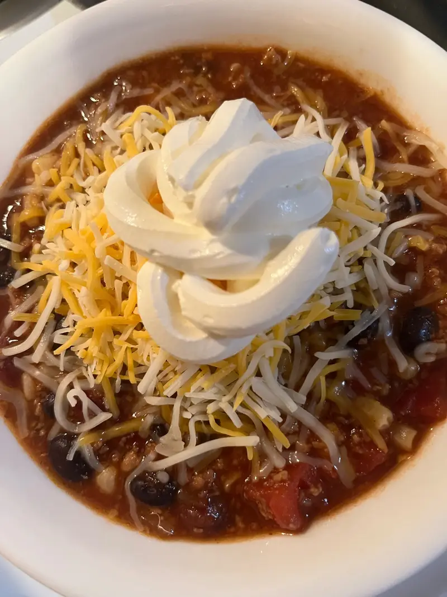

Taco Soup Recipe

This quick and easy taco soup is supposed to have a runtime of 30 minutes! 98% would make again! Made with avocado, cheese,
and yum yums this delicious recipe is sure to set off your appetite and it feeds 6. Perfect for weeknights!
Ingredients
- 1 lb lean ground beef(454 g)
- 1 small onion, chopped
- 15 oz canned kidney bean(425 g), 1 can
- 15 oz canned black bean(425 g), 1 can
- 15 oz canned corn kernels(425 g), 1 can
- 15 oz canned diced tomato(425 g), 1 can
- 8 oz tomato sauce(225 g), 1 can
- 2 tablespoons taco seasoning
- 1 shredded cheddar cheese, to serve
- 1 sour cream, to serve
- 1 pico de gallo, to serve
- 1 avocado, sliced, to serve
- 1 tortilla chip, to serve
- 1 lime wedge, to serve
- 1 chopped cilantro, to serve
Steps
- 1. Add the ground beef and onion to a large pot and stir until the beef is cooked through.
- 2. Drain excess liquid.
- 3. Add the kidney beans, black beans, corn, tomatoes, tomato sauce, and taco seasoning to the pot, and stir until combined.
- 4. Cook over medium heat for 10 minutes.
- 5. Serve with cheddar cheese, sour cream, pico de gallo, avocado, corn chips, lime wedges, and cilantro.
- 6. Enjoy!